1. Introduction and Objective
The aim of this tutorial is to explain the main steps to follow to conduct a structural analysis in ANSYS. The study case is an aircraft wing made of a skin, ribs and spars. The wing is clamped at the spar end points and loaded with a 160 N force applied on the rightmost rib, in the direction of gravity.
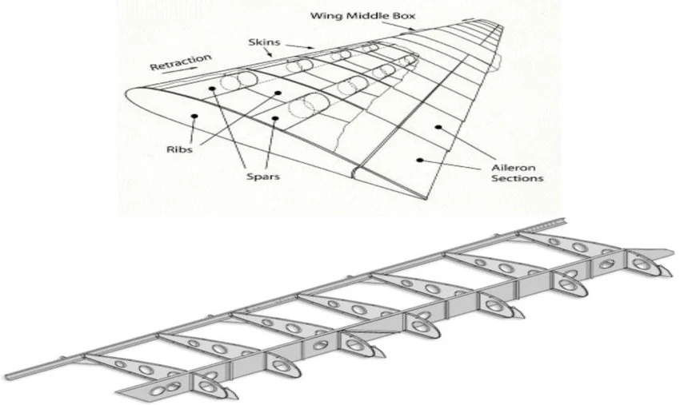
2. Geometry Assembly in SolidWorks
The wing was modeled and assembled in SolidWorks. The assembly contains the wing skin, the ribs and the spars.
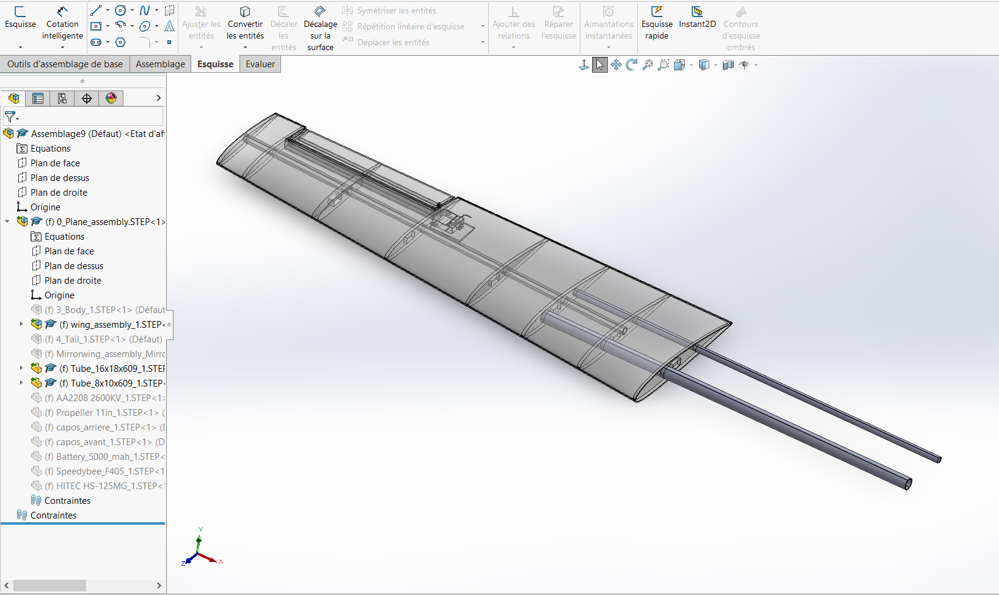
3. Geometry Preparation in SpaceClaim
A wing is a thin-walled structure, so the geometry was idealized by dimension to reduce the size of the model:
- Spars: converted into beams (line bodies) with the Extract tool. A cross-section is assigned to each beam.
- Skin and ribs: converted into 2D surfaces with the Midsurface tool. The thickness is kept as a property of the surface.
In Mechanical, this leads to beam elements for the spars and shell elements for the skin and the ribs. Compared with a full 3D solid mesh, this gives a much smaller model and a faster solution.
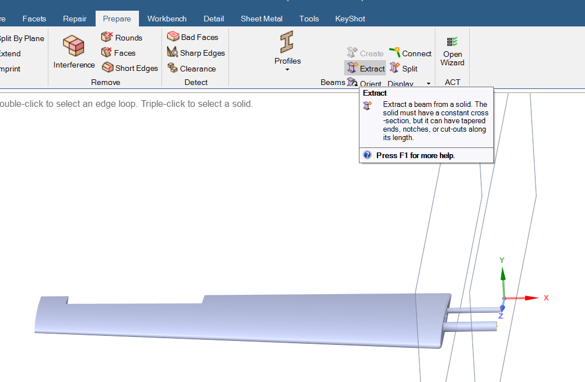
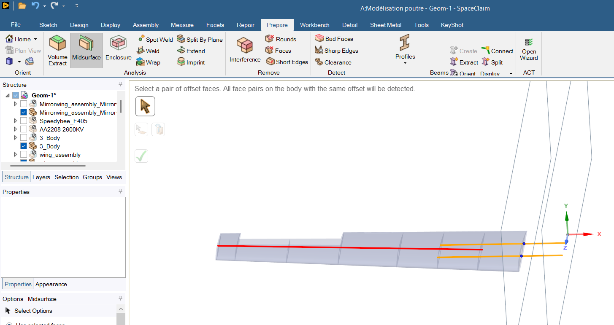
Share Topology
After the idealization, the beams and surfaces are still separate bodies. In the Workbench tab of SpaceClaim, the Share option makes neighbouring bodies use common edges and vertices at their interfaces. The mesh nodes at the junctions are then shared, so the parts behave as one continuous structure and loads can pass through the joints.
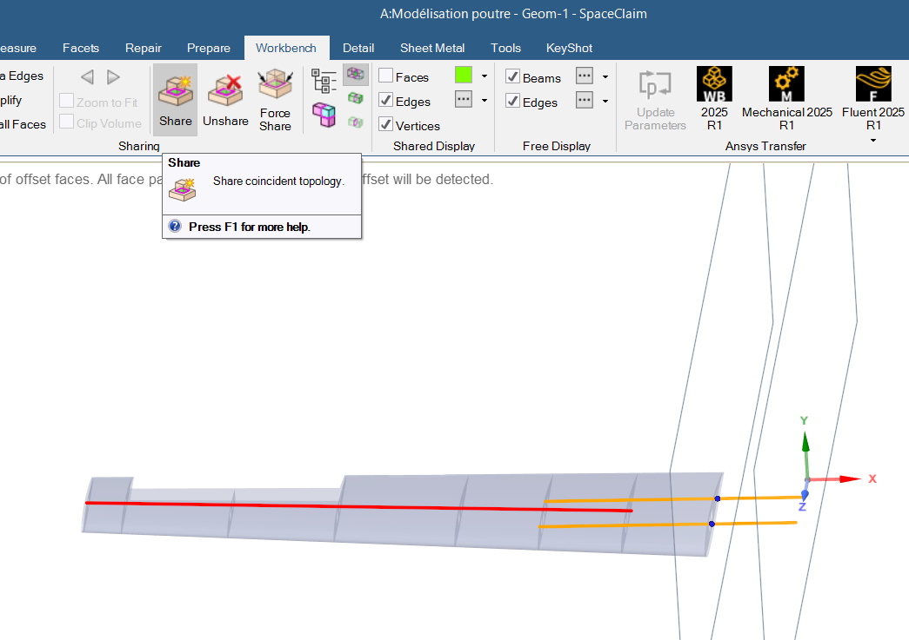
4. Connections in ANSYS Mechanical
Bonded contacts were added between the skin, the ribs and the spars. A bonded contact glues two bodies together at their interface: there is no sliding and no separation, as if the parts were welded. It is a linear contact, so the analysis stays fast, and forces and moments are transmitted across the joints.
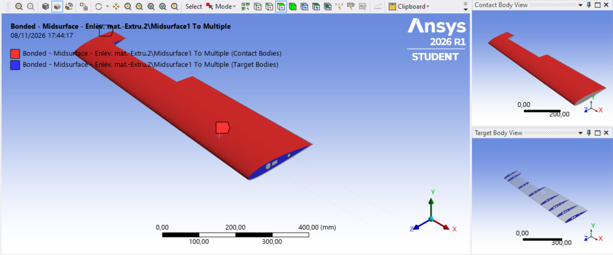
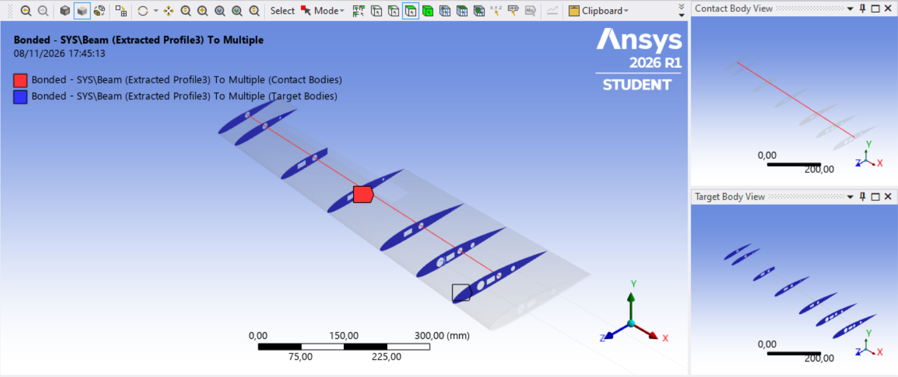
5. Mesh and Sizing
The mesh was generated in Mechanical. A sizing control was added at the end to increase the element size and reduce the number of elements.
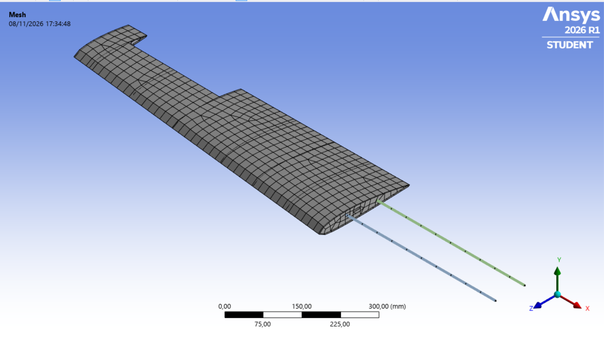
6. Boundary Conditions and Load
Since the support is applied only at the end points of the beams, the stresses near these points are locally high and not very accurate. This is a normal effect of point constraints and is acceptable for this exercise.
7. Results
| Result | Maximum value |
|---|---|
| Total deformation | |
| Equivalent (von Mises) stress |
Total Deformation
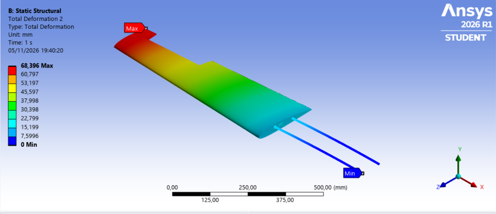
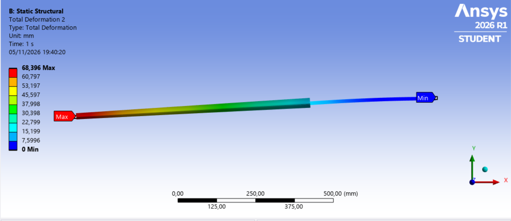
Equivalent (von Mises) Stress
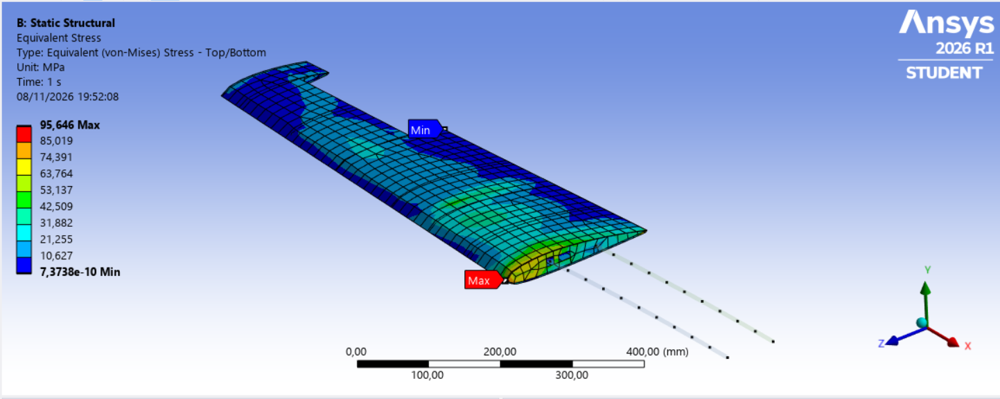
8. Conclusion
This exercise presented the main steps of a structural analysis in ANSYS: idealization of the geometry in SpaceClaim, connection of the parts, meshing, definition of the supports and the load, and post-processing of the deformation and the von Mises stress.
← Back to Projects